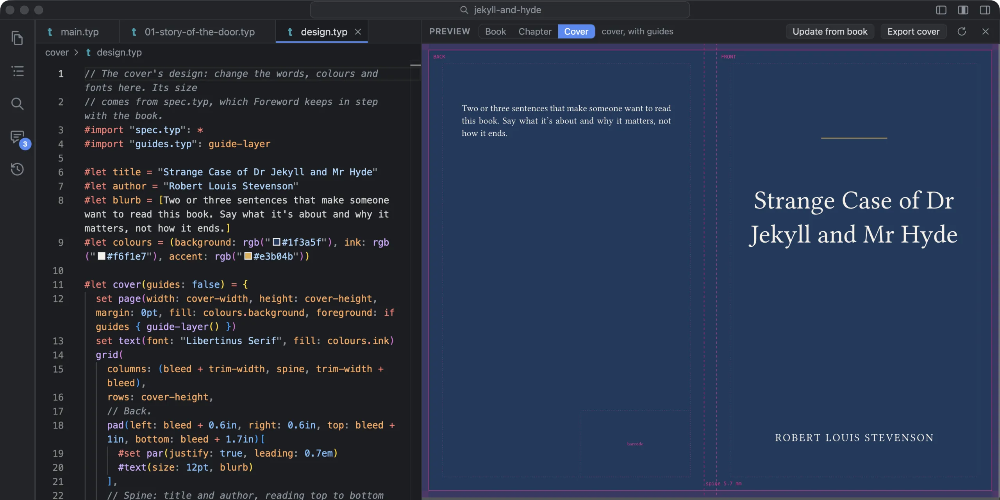
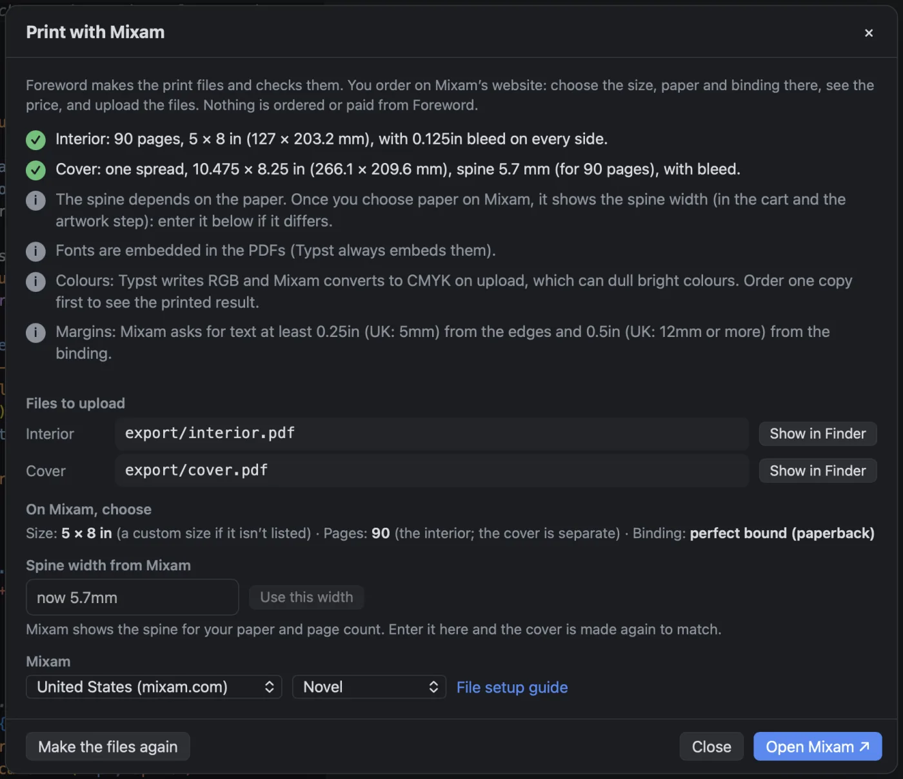

The cover
Book ▸ Design Cover… asks for a style (Classic, Band or Picture), the title and author (filled in from the book), the trim size (from the book’s page size) and the page count (from the book as it is now). It writes the cover into a cover folder in your book, and the preview switches to Cover.
A printed cover is one sheet that wraps round the book, so its width depends on how thick the book is. Foreword works the spine out from the page count and the paper you choose: cream, white or colour, using the paper thicknesses Amazon KDP publishes. Jekyll and Hyde, 90 pages at 5 × 8 in on cream, gets a 5.7 mm spine and a cover 10.475 × 8.25 in. Your printer’s own spine calculator is the figure to trust, so Exact width from my printer takes theirs instead. The title goes on the spine once the spine is wide enough for it, from about 100 pages.
The design is yours to change: it’s ordinary Typst, and the preview shows it with its guides in pink. When the book changes, Update from book brings the size and page count up to date and leaves everything else as you set it. Export cover makes the PDF, without the guides.
The inside pages, with bleed
A picture that runs to the edge of the page has to be printed a little past it, so the printer can trim it cleanly. That extra is the bleed: an eighth of an inch on each side, for Mixam. Foreword adds it when it makes the printer’s PDF, without changing your book. The pages break exactly as they did, and the PDF tells the printer where to trim.
Checks, then Mixam
Book ▸ Print with Mixam… makes both files, then checks the files themselves: the page size, that every page is the same size, the bleed, that the cover is exactly as wide as the book needs, and that the cover and the inside agree on the page count.
It warns you about an odd number of pages (books are bound in sheets), fewer than 32 pages (too thin for a glued spine; Mixam staples those), pictures meant to run off the edge that stop short of it, and code examples that are out of date. Where there’s a fix, there’s a button beside it: Design a cover…, Update cover from book, Run code examples.

Then it tells you what to choose on Mixam’s site (size, page count, binding), lets you paste in Mixam’s own spine width to remake the cover, and opens Mixam’s site for the US, the UK, Canada or Australia. Nothing is ordered or paid for in Foreword. Mixam only gives prices to approved partners, so you get the quote and place the order on its site.
The rules it checks come from Mixam’s own guide to setting up files: an eighth of an inch of bleed, the inside as single pages, the cover as one sheet, a glued spine from 32 to 48 pages up depending on the paper, and text kept a quarter of an inch from the edges and half an inch from the binding.
What it doesn’t do
- Colours are sent as screen colours. The printer converts them for print, which can dull bright colours, so order one copy before you order many.
- No hardcover or dust-jacket covers, no ISBN barcode (just a box where it goes), and no check that pictures are sharp enough to print.
- The paper thicknesses are KDP’s. For another printer, type in their spine width.
- Mixam is the only printer it prepares for so far.